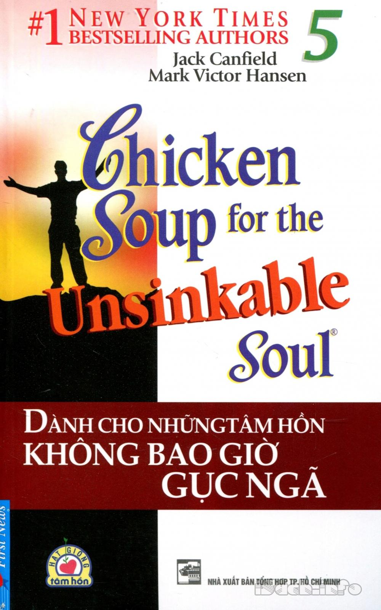

« Back
Dành Cho Những Tâm Hồn Không Bao Giờ Gục Ngã
By Jack Canfield & Mark V. Hansen

Cùng Bạn Đọc.
Sức Mạnh Những Câu Chuyện.
Lời Giới Thiệu.
Một Ngày Mới Trong Cuộc Đời Dorothy.
Cội Rễ Của Sự Trưởng Thành.
Những Chiến Binh Tí Hon.
Vượt Qua Bức Tường Câm Lặng.
Albert.
Hãy Tin Rằng Bạn Có Thể.
Hãy Dám Tưởng Tượng.
Không Bao Giờ Bỏ Cuộc.
Lúc Đó Tôi 37 Tuổi.
Câu Chuyện Về Một Nhà Văn.
Tzippie.
Một Ngày Trên Bãi Biển.
Mỗi Ngày Là Một Món Quà.
Đừng Lo Quá, Hãy Cứ Vui Lên.
“Cha Bạn Bị Làm Sao Vậy?”.
Kết Thúc Để Khởi Đầu.
Về Tác Giả.
Sự Ra Đời Của “Chicken Soup For The Soul”.
Không Từ Bỏ Ước Mơ.
Chinh Phục Thế Giới.
“Chicken Soup For The Soul”.